4. Spin Qubits#
Source
This chapter follows TU Delft’s QTM2x course on edX closely, with its figures and quizzes, and adds my own notes. Where the text says we, the course’s lecturers are speaking. I am grateful to TU Delft for teaching this openly.
Now that we have coverded all the basic building blocks of a quantum computer. It is now time to dive deeper into the block at the bottom of the stack: the quantum chip! Qubits can be realized in many different physical platforms, and in the next week’s we will introduce you to some of these realizations.
We will start with an introduction about electron spin qubits realized in semiconductor quantum dots. These qubits highly resemble the classical semiconductor transistors that we use everyday in almost every electronic equipment. This unique characteristic has attracted a lot of attention from the most important semiconductor companies. Check out this article about Intel’s vision about spin qubits.
Than explain how we can control single electrons and isolate them in semiconducting islands called quantum dots. Once we have isolated single electrons, we need to be able to manipulate their spins and make those spins interact with each other in a controllable manner. This will be the topic of the next section
When we look back at the development of semi-conducting technology, a great moment was in 1947 - the demonstration of the first transistor. Shortly after that, people began to put several transistors together on a circuit with capacitors and resistors; and developed the first transistor radio. Even though this technology was quite remarkable, it clearly had its limits; how many components could you really solder together by hand on a board?

So a second momentous step was in 1958 - the first demonstration of an integrated circuit, where all of the relevant components were integrated monolithically in the same piece of germanium or silicon, and that’s led to the remarkably powerful and complex processors that we use in computers and memory chips today.
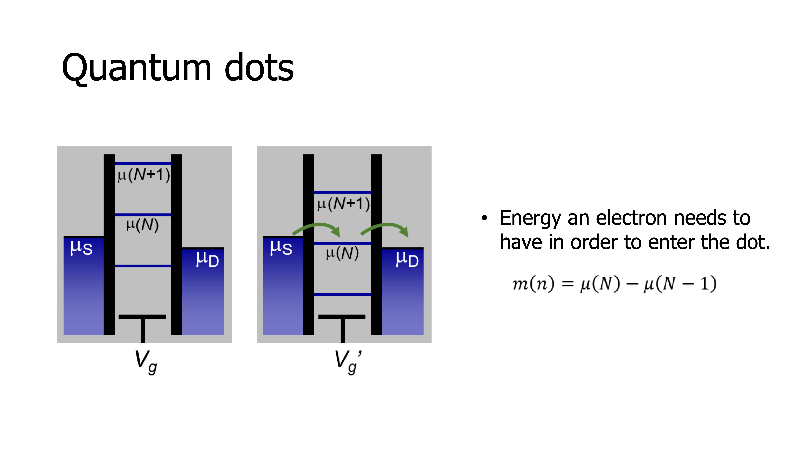
Now, based on this very same core technology of transistors and integrated circuits, we have found in the last decade how to build some of the highest-quality quantum bits. If we look at how a transistor is built, essentially, it is a switch that controls the flow of electrons between two contacts using the voltage applied to a single gate.
If we now imagine that we replace the one gate by multiple gates side-by-side separating the contacts, then with the gates we can locally pull in electrons or push away electrons, depending on the polarity of the voltage that we apply to the gates.
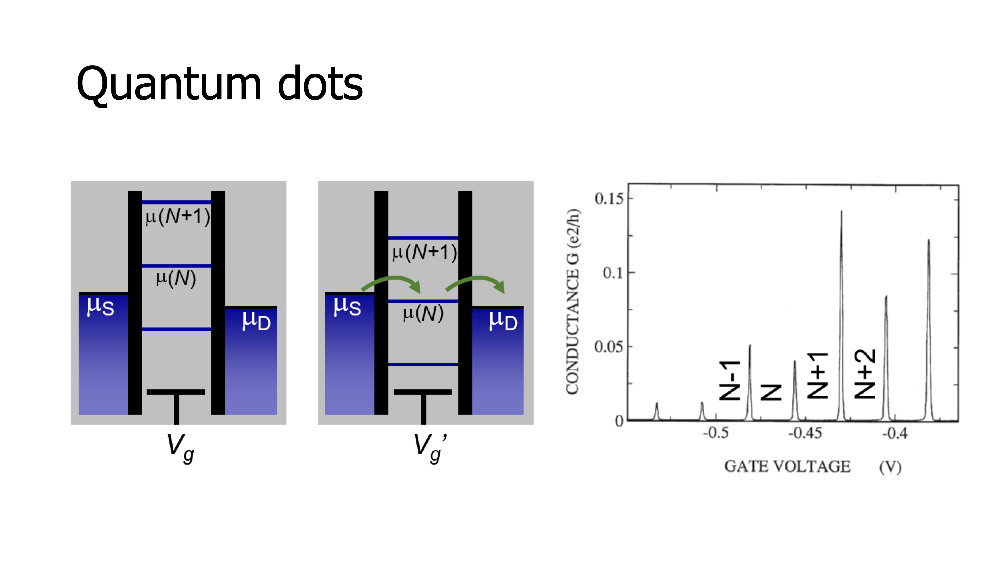
In this way it is actually possible to isolate small puddles of electrons from the rest of the world. A quantum dot is the small space where electrons are pulled in below one gate separated by other puddles of electrons.
As a community, it’s now become routine to go to the extreme limit, where below each of these electrodes, just one single electron is isolated; and the spin of that electron is going to be our quantum bit. So how in the world can we isolate individual electrons and control them? It starts with the notion of the charging energy, that is the energy that results from the Coulomb repulsion between electrons. As we add charges to the island, this costs energy, and if you go to very small capacitances, it turns out that the charging energy, the energy required to add one single electron charge, can be larger than the thermal energy. To give some examples, for a small island with a radius of a 100 nanometers, the charging energy is 3 meV. To put that number into perspective, the thermal energy at 4K is ten times less than this. So at 4K it is actually possible to control the number of charges on these islands one-by-one. How do we know that individual charges are being added to the island?
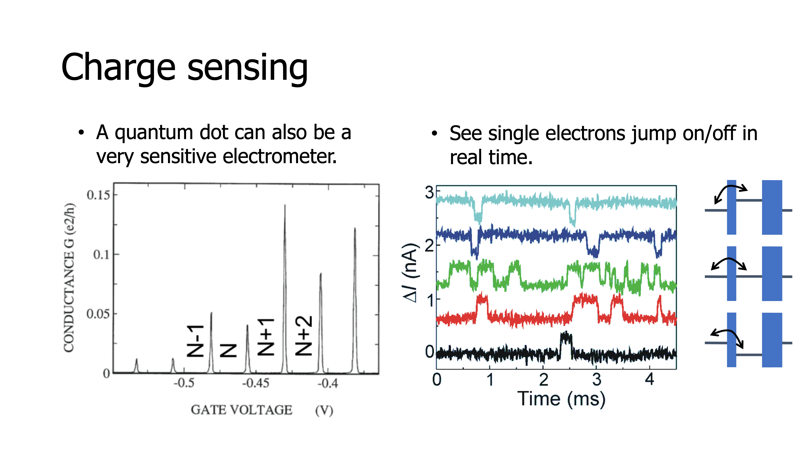
The standard method is to look at the current that flows between the contacts through the quantum dot – the central island. In this schematic, we see a set of lines, called electrochemical potential lines, that can be pushed up or pulled down by the gate voltage as a ladder, and each line indicates the energy needed to add the next electron to the island. What we see in the configuration on the left is that this energy is larger than the energy of the highest occupied state in the reservoirs, called the Fermi energy, so the electrons in the reservoir don’t have enough energy to go into the quantum dot. Furthermore, the line at the dot below it is lower than the Fermi energy in both reservoirs so no electron can leave the dot.
In other words, electrons cannot be removed from the island and electrons cannot be added to the island; current is blocked. We call this Coulomb blockade. In the configuration on the right, we have adjusted the gate voltage in such a way that the ladder comes down, and the electrochemical potential μ(N) lies exactly within the window between the source and drain Fermi energies or electrochemical potentials. In this condition, if an electron can move from the source into the island, then from the island it can move out to the drain. However, before the first electron leaves, no second electron can enter. So individual electrons are really being added one by one as they pass through the quantum dot. But altogether, these many electrons moving through one by one, do produce a measurable current.
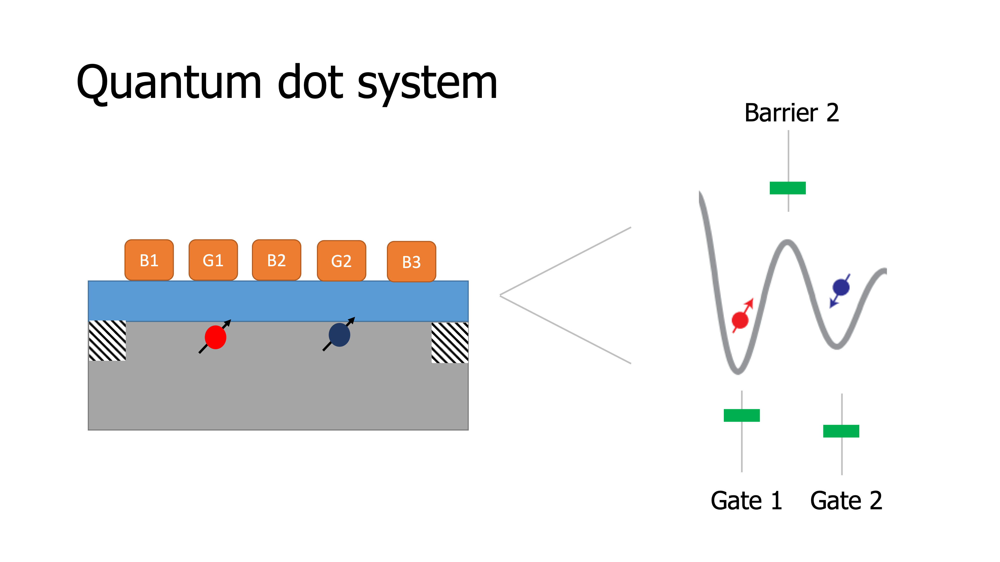
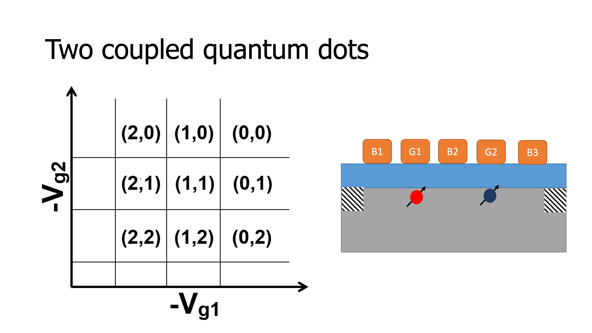
The current flows whenever the electrochemical potential lies within this biased window between source and drain. We see this beautifully in measurements as sharp peaks in the conductors and current through the quantum dot for specific gate voltages where we have reached an alignment as shown in the schematic on the right, and for the intermediate gate voltages, the current is blocked. A second important method to measure and detect the presence or absence of individual electrons is what we call charge sensing.
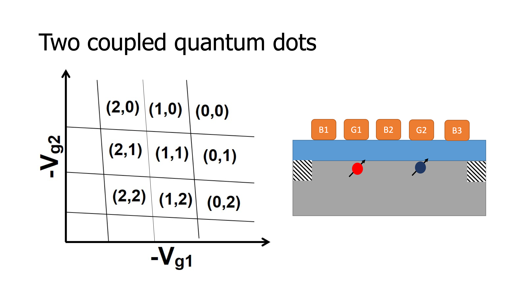
Basically, if you imagine a single quantum dot and another quantum dot next to it, as you have seen, the current through the second quantum dot sensitively depends on the gate voltage; with a small change in gate voltage we can produce a large current or completely shut off the current. Now imagine a second quantum dot is placed next to the first. It turns out that a single charge added to the second quantum dot acts like a small shifting gate voltage through capacitive coupling, it shifts the position of the levels in the first quantum dot. So when a single charge is added to one quantum dot, the current through a neighbouring quantum dot is changed in a measurable way. Let’s look at an example of two quantum dots.
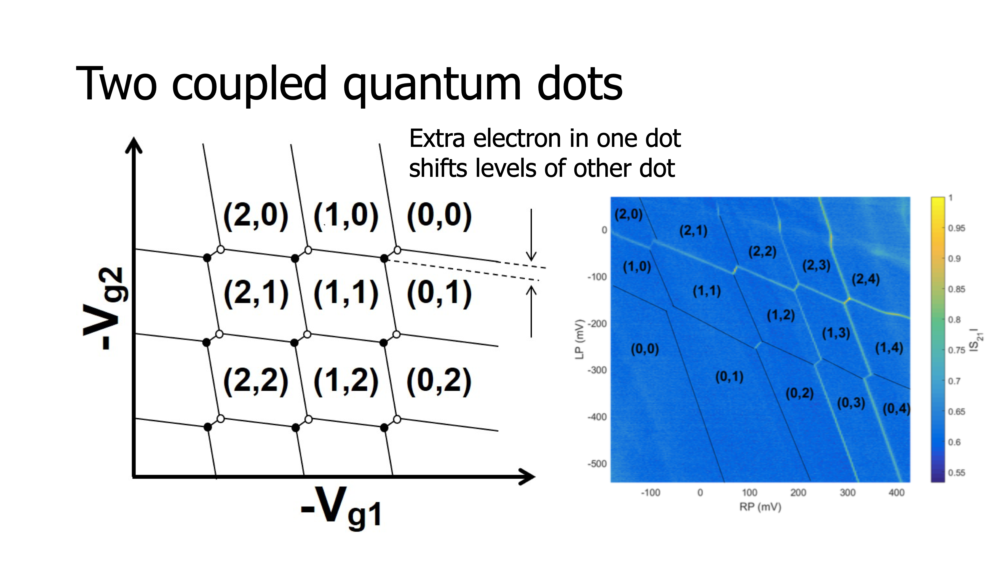
In this case we need an additional gate in between the two quantum dots to control their coupling. By lowering the voltage on this tunnel barrier gate we can tune the electrical potential in such way that the two electrons are well isolated from each other. If we draw a gate voltage space where the gate voltage that controls the potential of one quantum dot is plotted on the horizontal axis, and the gate voltage that controls the second quantum dot on the vertical axis; then, if the two quantum dots are uncoupled, for specific voltages on the first gate electrode electrons are added to the first quantum dot.
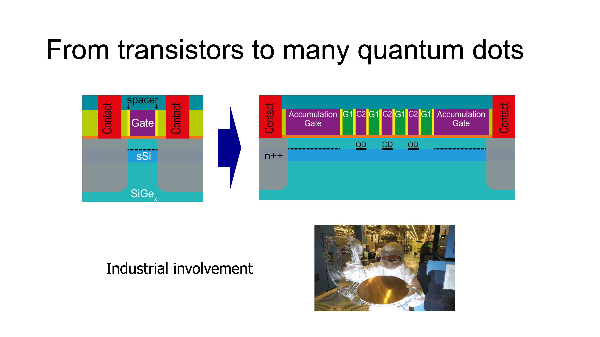
These transitions are represented by the vertical lines in the plot. Similarly, for specific voltages on the second gate electrode, electrons are added one at a time to the second quantum dot. These are the horizontal lines. If we now consider two quantum dots in each other’s vicinity, two effects will happen.
The first is that crosstalk. The voltage applied to the first gate electrode also affects the potential of the second quantum dot, which sits to its side; and vice versa. That’s why, the lines that were vertical and horizontal before, are now aligned at an angle.
A second effect is that a change in the number of electrons in one quantum dot changes the alignment of the levels in the second quantum dot, which is seen in the diagram as discrete shifts in the position of the charge transitions. So now, how to go from these simple concepts of early demonstrations to large-scale circuits? First we require all the quantum dots to be as identical and uniform as they can be, so that it becomes practical to control the properties of many quantum dots, representing the qubits. To do that, even though university clean rooms have been a great way to get started, it has become clear that we really need access to industry-standard clean rooms, that are optimized not for creative science and exploring new ideas, like university clean rooms, but that are optimized for producing many components that are all as clean and identical as they can be. With this motivation, in 2015, we started a close collaboration with Intel that is focused on using 300 mm technology to produce high quality quantum dot arrays. Now, even if quantum dot arrays are placed along a line, eventually, we do need two- dimensional arrays. Bringing wires to all the qubits in a two-dimensional array may be very difficult; however fruitful ideas have been explored to adjust qubits or quantum dots using cross-bar technology - the same technology that is used today in displays and memory chips.
Where a limited number of wires, that are running horizontally and vertically, can be used to adjust a much larger number of components, like pixels on a display or quantum dots in a two-dimensional array. With this approach, we envision that perhaps something like 1024 qubits can be integrated into a single array, no larger than 30 x 30 micrometres. To go beyond that, we envision true quantum integrated circuits, where different local arrays are interconnected with other local arrays on the same chip using what we call quantum links, links that can carry quantum information, that can transfer entanglement. Many ideas for producing such links have been tested and are being tested in the lab today. In addition, we imagine a layer of classical electronics co-integrated with the qubits in the same way, to distribute signals on the chip efficiently. No doubt, it’s a phenomenal challenge to realize such complex circuits. All the pieces are falling in place and we are working hard to make it happen.
4.1. Main takeaways#
In quantum dots, single electrons can be confined to be used as quantum bits.
Spin qubits have to be operated at sufficiently low temperatures, such that the charging energy exceeds the thermal energy.
The coulomb blockade prevents electrons to enter or leave the dot when the electrochemical potential of the quantum dot does not match the Fermi energy.
Neighbouring dots experience inter-dot capacitance and crosstalk.
4.2. Practice Quiz 4#
A “ladder” diagram describes situations in which electrons from the reservoir can and cannot jump on the quantum dot. This ladder picture is often handy when thinking about how to induce and stop current from going through the quantum dot. Below are a few exercises to help you make sure you are comfortable with this picture.
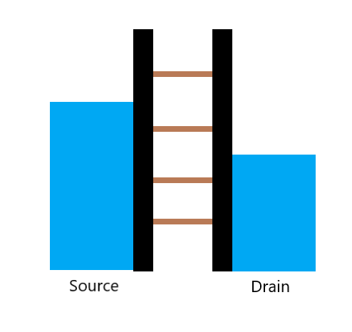
Here’s the first card.
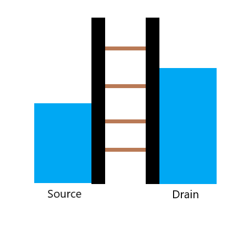
Here’s the second card.
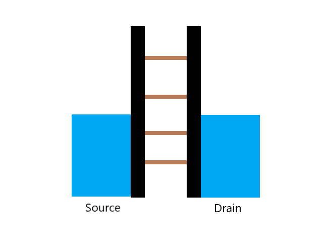
Here’s the third card.
4.2.1. Question 1#
Exercise 4.1
In which of the situations above will current flow from left (source) to right (drain)? Remember that current flows in the opposite direction as electrons flow.
a
b
c
In which of the following situations will current flow from right (drain) to left (source)?
a
b
c
In which of the following situations will there be no current?
a
b
c
4.2.2. Question 2: Industrial involvement#
Exercise 4.2
If we want to build large-scale quantum computers, we might need millions or even billions of these quantum dots. Why does an industry involvement become fundamental? Mark the 3 boxes that apply.
To increase device yield.
To improve quantum dot uniformity.
Industrial cleanrooms give us a greater flexibility to explore new ideas.
To produce substrates of higher quality.
Isolate single electrons is not possible in university cleanrooms due to low quality substrates .
Explanation
While university cleanrooms provide a better environment for the exploration of new ideas, collaboration with industry gives experimentalists access to higher-quality substrates, as well as precise, large-scale facilities for producing large numbers of identical quantum dots.
4.3. Quiz 4: Introducing spin qubits#
4.3.1. Question 1: Quantum dots and transistors#
Exercise 4.3
Classical computing is largely based on one active ele- ment, the transistor. In a minimal model a transistor can be thought of as a three-terminal device, where the current between two contacts is controlled by a third gate, which can attract and push away electrons. A quantum dot is a very similar device, which can be used to manipulate electrons for quantum information applications. Which of the following two sentences are true? Mark the two that apply.
A transistor pushes electrons away while a quantum dot attracts elec- trons.
In a quantum dot, electrons can be isolated and their number con- trolled down to the single electron level.
A transistor and a quantum dot have both a linear voltage-current response.
A transistor is orders of magnitude smaller than a quantum dot.
In a quantum dot we need to place more gates in order to confine the
Explanation
Quantum dots and transistors are similar, in that they are both involved in controlling the behaviour of electrons (either attracting or repelling them) by applying local voltages to charge conducting leads. Both of these devices have non-linear current-voltage responses, and both can be fabricated at sizes ranging from 10 to 100 nanometres. The main difference between quantum dots and transistors is that quantum dots require more gates to produce an electric field which can trap single electrons.
4.3.2. Question 2: Single electron confinement#
Exercise 4.4
Electrons can be trapped in a quantum dot, such that the total number of electrons in the central island remains fixed. When a tunneling event occurs a single electron suddenly jumps onto the island, changing its energy by an amount equal to \(Ec = e2/C\). If we approximate the quantum dot as a sphere, where the capacitance is given by \(C = 4πεrε0R\), we can make an estimation for the temperature needed to see single tunneling events. For a dot of 100 nm, what kind of temperatures do we need to be able to confine single electrons? Assume that the thermal energy should be one order of magnitude smaller than the charging energy, such that \(10kBT = Ec\). \(e = 1.602 × 10−19C\), \(εr = 3.9\), \(ε0 = 8.854 × 10−12 F/m\), \(kB = 1.38064852 × 10−23 J/K\)
4K
10K
40K
300K
Explanation
Thermal excitation is a primary source of error in quantum computing, which is why many quantum computing experiments are done at low temperature. To determine the working temperature, it is often necessary to compare the thermal energy with the energy necessary to stop the device from functioning as expected (in this case, by knocking the electron out of the dot). There are other ways that thermal excitations can disturb electron spins, that involve much lower energies, so the working temperature for these devices is much lower in practice, near \(0.01 K\)
4.3.3. Question 3: Charge stability diagrams#
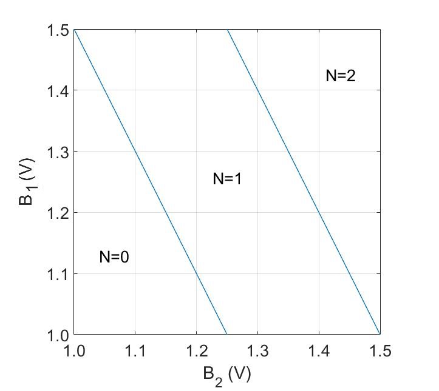
Here’s the first card.
Here’s the second card.
Exercise 4.5
Charge stability diagrams explained how the slope of charge transitions in a charge stability diagram depends on the coupling with nearby gates. In the figures below we see a schematic of two charge stability diagrams where we sense transitions originating from a single quantum dot coupled to three nearby gates \(B1\), \(B2\) and \(B3\). The quantum dot is located under the gate with the strongest capacitive coupling. (a(b)) B2 # B3
\(B1\)
\(B2\)
\(B3\)
Equally coupled to all three
Explanation
If in both graphs the lines had been vertical, the dot would have solely been coupled to \(B2\) and not at all to \(B1\) and \(B3\). The slight tilt shows that the dot is also coupled equally to \(B1\) and \(B3\). However, the coupling with the gate \(B2\) is still stronger than the others revealing that the dot is located under the gate \(B2\).
4.3.4. Question 4: Charge sensing#
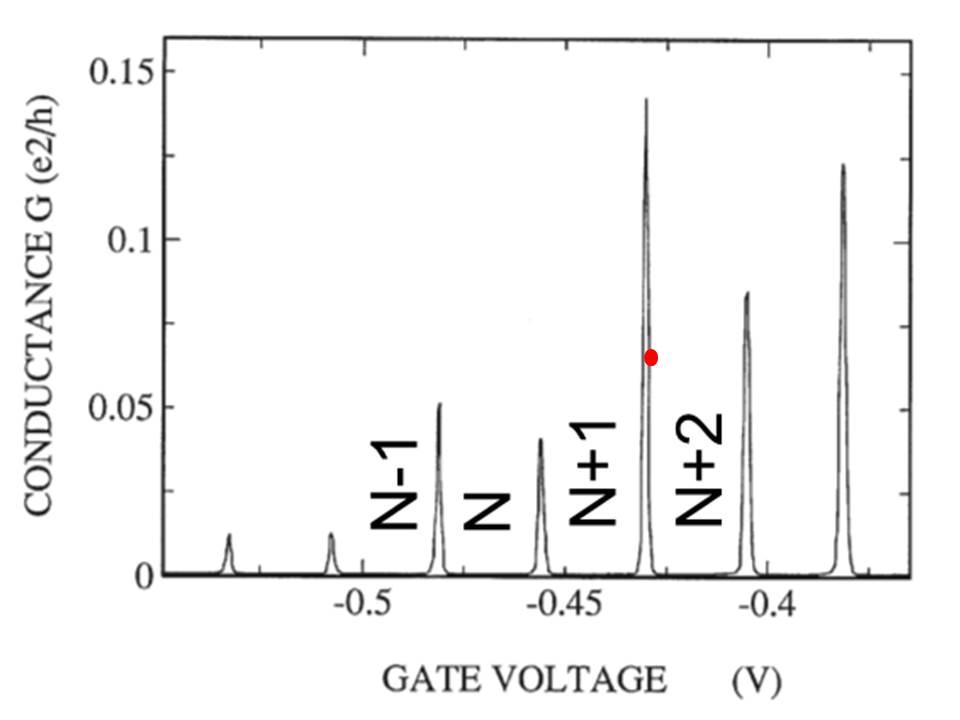
Here’s the first card.
Exercise 4.6
Charge sensing A quantum dot is also a very sensitive electrometer. Since electrons carry a negative charge, any movement will change the electrical potential of the environment near the quantum dot and they can therefore be sensed. Let’s suppose that we have two weakly coupled quantum dots close to each other and we want to use the first to sense the charge transitions happening in the second quantum dot. In order to do that, we tune the first quantum dot in a regime of high sensitivity (see red circle in the figure below).
\(B1\)
\(B2\)
\(B3\)
Equally coupled to all three
Explanation
Whenever an electron moves closer to the sensing dot, the potential for the sensing dot decreases (as an electron is of course negatively charged). Looking at the graph, the red dot will shift upwards in case of a decrease of electric potential. Therefore, if the displacement is not too large (as in the case of two weakly coupled quantum dots), the current increases.
Exercise 4.7
Charge stability diagrams In the video, Lieven explained how the slope of charge transitions in a charge stability diagram depends on the coupling with nearby gates. In the figures below we see a schematic of two charge stability diagrams where we sense transitions originating from a single quantum dot coupled to three nearby gates \(B1\), \(B2\) and \(B3\). The quantum dot is located under the gate with the strongest capacitive coupling. (a(b)) B2 # B3
The current will stay constant.
The current will increase.
The current will decrease.
There will not be any current at all.
Explanation
Connectors can be tens of thousands of times larger than the typical quantum dot. This means that, even though a standard semiconductor wafer is large enough to contain millions of quantum dots and fit in a dilution refrigerator, it can only be connected to a few thousand connectors, making individual control over each qubit impossible.
4.3.5. Question 5: Challenges for spin qubits#
Exercise 4.8
What is one of the biggest challenges to build large 2D arrays of quantum dots?
The scaling of the number of connectors with the number of quantum dots is not compatible with large-scale architectures.
Large 2D arrays of quantum dots occupy nowadays too much space
Current quantum algorithms cannot be run in 2D arrays, only in 1D
Cooling down a chip with millions of quantum dots to mK regime is currently not possible
Explanation
Connectors can be tens of thousands of times larger than the typical quantum dot. This means that, even though a standard semiconductor wafer is large enough to contain millions of quantum dots and fit in a dilution refrigerator, it can only be connected to a few thousand connectors, making individual control over each qubit impossible.